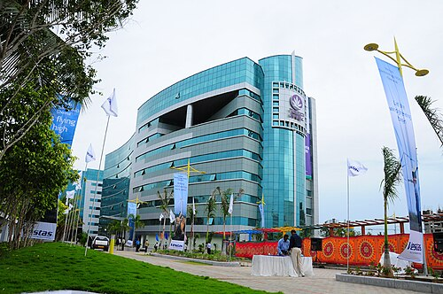

IT COMPANIES

Chennai Product Based and Services Based Companies


Companies
Zoho Corporation
Zoho Corporation is an Indian software company that develops cloud-based business applications for organizations of all sizes. Founded in 1996 and headquartered in Chennai, it has grown into one of the world's largest privately held SaaS providers, offering an extensive suite of productivity, CRM, finance, HR, collaboration, and IT management products.
Type
Product
ROLE
CRM, Mail, HR, Finance, Business Software
https://www.zoho.com/login.htmlFreshworks
Freshworks Inc. (NASDAQ: FRSH) is the AI-powered, unified service operations platform that is fast to deploy, intuitive to use, and enables every employee to be more productive. We give agile enterprises the depth they need to operate at scale, without the operational drag of legacy platforms. Domain-specific AI built for IT, HR, finance and every business team on a decade of real service context. Trusted by Seagate, New Balance, Nucor Corp, Sony Music Entertainment, McLaren Racing, and agile enterprises everywhere.
Type
Product
ROLE
Freshdesk, Freshsales, Freshservice
https://www.freshworks.com/Service-Based Companies


Tata Consultancy Services
Tata Consultancy Services is a global information technology services, consulting, and business solutions company and a member of the Tata Group. It is one of the world's largest IT services firms, serving clients across many industries and operating in numerous countries, with a strong reputation for large-scale enterprise technology projects.
Type
Service-Based
ROLE
Software Development, Consulting
https://www.tcs.com/